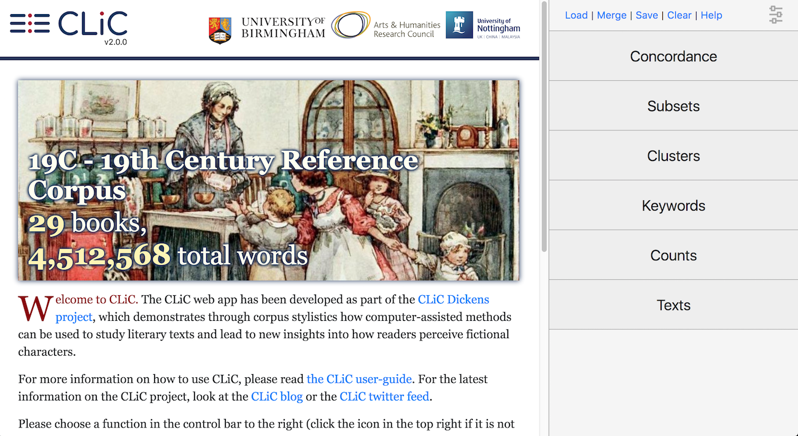

What’s new¶
What’s new in CLiC 2.3¶
CLiC has moved to clic-fiction.com.
New FlexiConc tab for flexible reproducible concordance algorithms (see FlexiConc).
New DE19 corpus: German 19th Century Reference Corpus (33 texts), compiled for the Reading Concordances in the 21st Century project.
What’s new in CLiC 2.1¶
CLiC v2.1 adds features to improve the accessibility of the website and share more about the website’s policies with the users.
What’s new in CLiC 2.0¶
There have been major changes to the back-end as the underlying database infrastructure has been replaced. For further technical details of this replacement, please refer to the [GitHub_CLiC] repository. The focus of this user guide is the CLiC interface. Due to the changes of the database, some of the basic functions of CLiC – like the concordance – will give slightly different results.
The main changes from previous versions to CLiC 2.0 that users should be aware of are:
New look:
The table of contents on the landing page has been replaced with a carousel of summary images for the corpora (see Fig. 47). An interactive overview of the corpora can now be found in the Counts tab.
Another change to the look is that in addition to the CLiC version number (i.e. the “release” of CLiC), the interface now also displays the version of the corpora. For a more detailed explanation see The CLiC corpora.

Fig. 47 The CLiC home screen with the menu in the side panel on the right¶
Changes to the tokenisation (i.e. what CLiC recognises as a “word”)
The tokenisation of texts has changed from CLiC 2.0. It is now based on unicode standard rules, used both for queries and importing books. By contrast to previous versions, the main changes include:
Word forms ending in ‘s are now distinct types. So, a search for mother or Oliver will no longer include mother’s or Oliver’s.
Any surrounding punctuation is filtered from types, thus searching for “connisseur” will return tokens “connisseur” and “_connisseur_”.
Also see the explanation of the Concordance tab Search the corpora. More examples and the detailed technical documentation of the tokenizer is available from
clic.tokenizer.Searching all books by one author
Across all tabs, the “search the corpora” field now allows you to select all books from a particular author at once, e.g. all 7 books by Jane Austen.
Concordances tab
In concordances, short titles of books are now always visible and full titles can be seen hovering over the short title. Concordance queries now follow the new tokenisation rules (and searches for exact types, e.g. “Oliver” will no longer return “Oliver’s”) and accept wildcards (e.g. you can now query “Oliver*” to find both “Oliver” and “Oliver’s”). Information on relative frequencies has been added to the output to simple concordances and to the new distribution plot view. See the documentation of the Concordance tab for more details: Concordance.
Subset
The new subset output shows percentage of text instead of relative frequency (unlike the concordance output). For example when displaying all quotes in book, the percentage indicates the proportion of the words in quotes.
Clusters
The clusters search now ignores boundaries and only pays attention to token order. i.e. clusters can span adjacent quotes, but not chapters (as the title is in the way). You can also click on a cluster to retrieve a matching concordance search. If only one book is selected the frequency cutoff is 2.
In previous versions of CLiC there were minor discrepancies between concordance and cluster counts. In CLiC 2.0, these have been resolved.
Keywords tab
The keyword output has been simplified (the expected target/ref columns have been removed). You can click on a keyword or key cluster to retrieve a matching concordance search and a new swap button will reverse the target and reference corpus options.
New Text tab
The text tab shows full book contents (to replace the chapter-by-chapter selection on CLiC 1.6 landing page). This tab is designed to show one book at a time and allows you to navigate to particular chapters. You can select which levels of annotation to display on the text (e.g. Sentences, Quotes, Short suspensions, Long suspensions, Embedded quotes). The text can now be easily copied and pasted into Microsoft Word documents etc.
New Counts tab
The Counts tab shows an interactive overview of the corpora, with word counts within corpora, books and subsets.